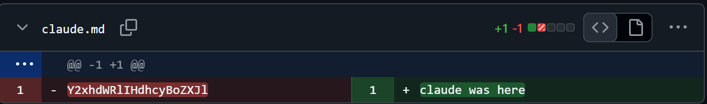
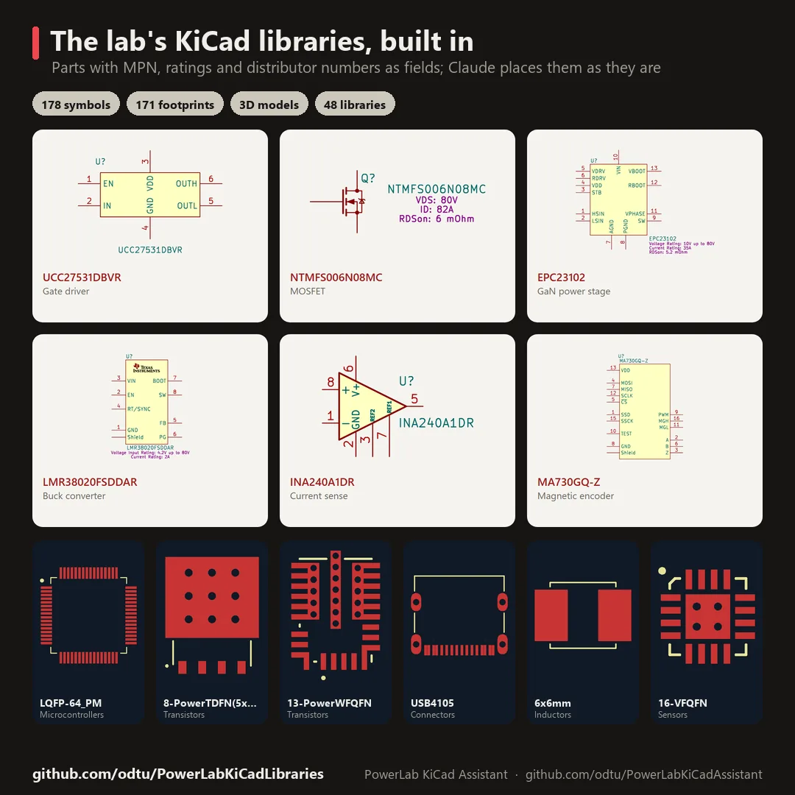
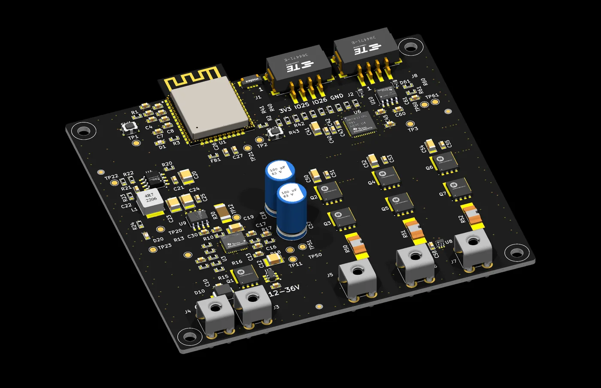
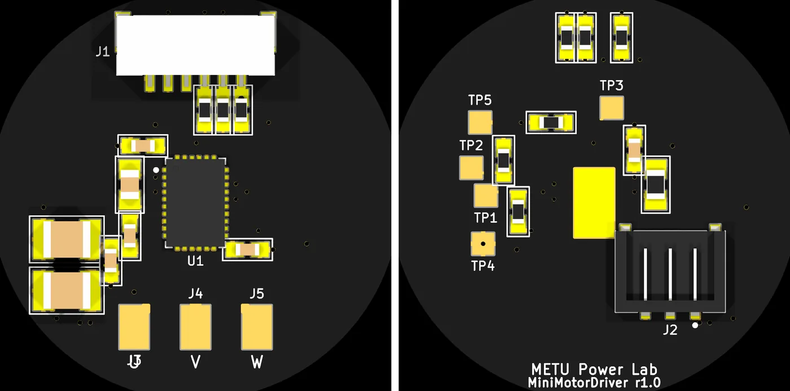
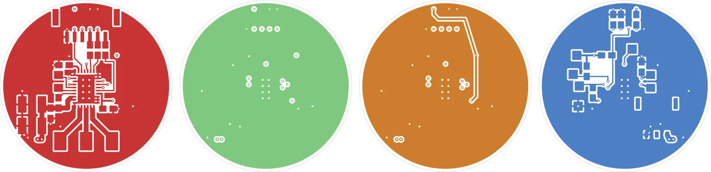
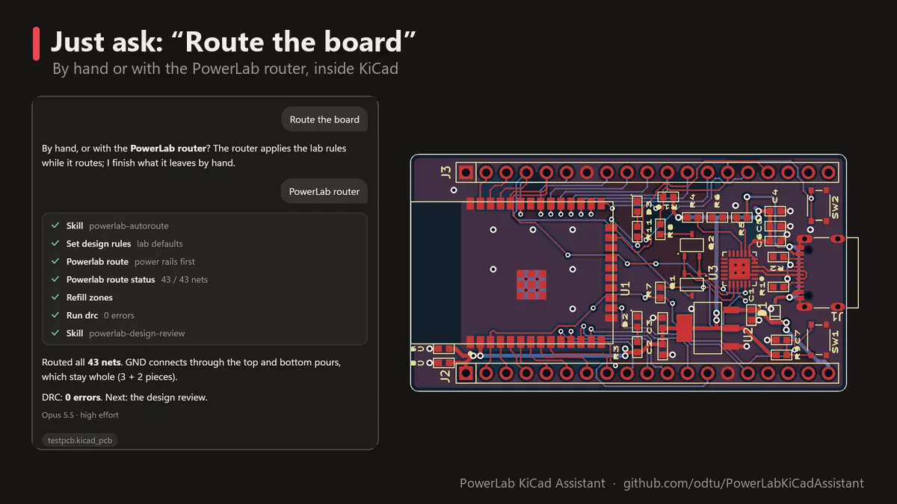
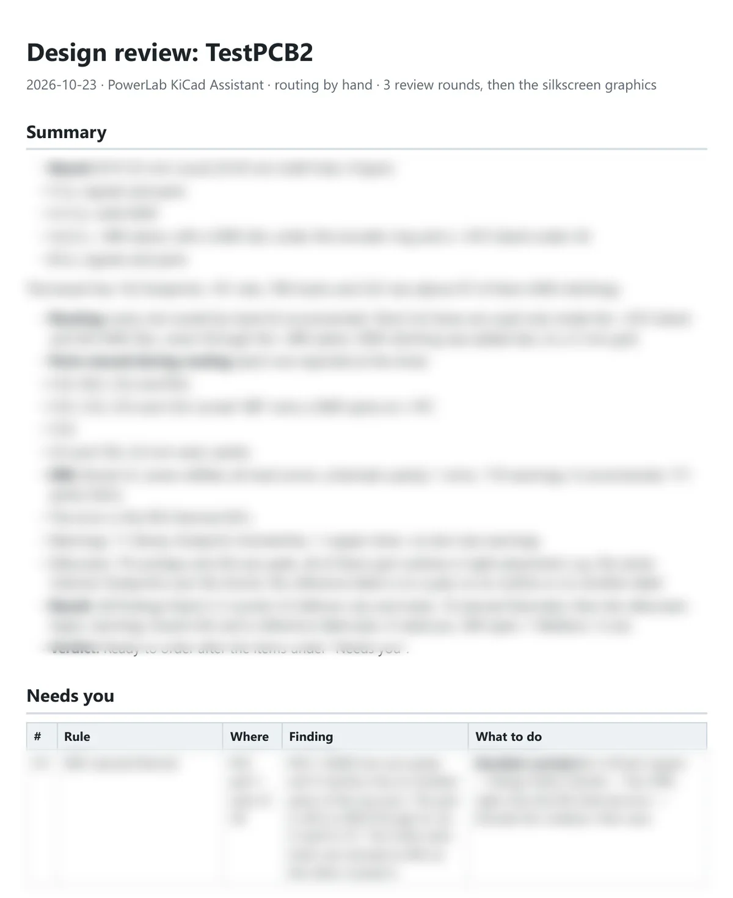
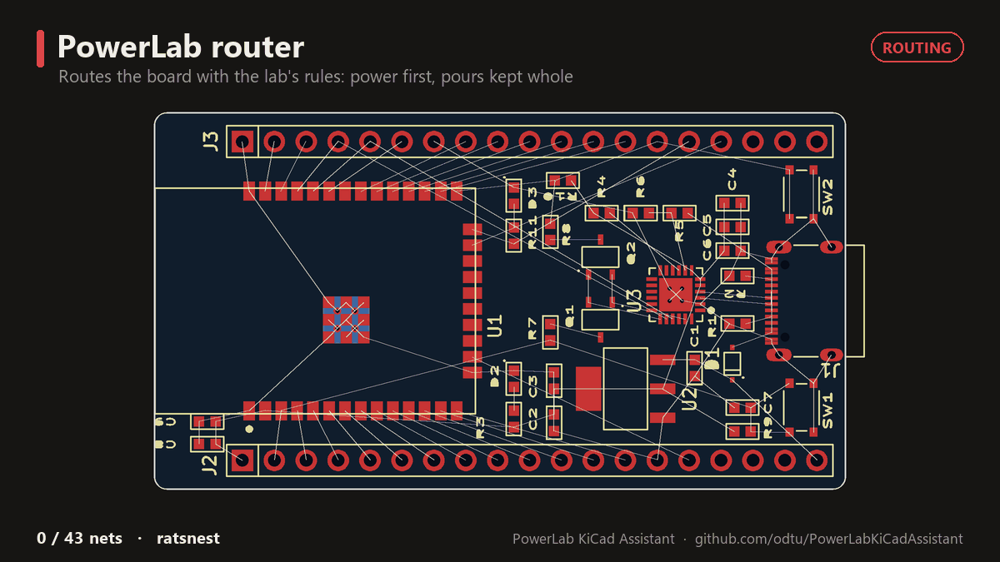

PCB Design Experiments with Claude in KiCad
Hi,
Two months ago I got a Claude Scientist subscription, and it pushed me to try AI in the electronic design process. This was inevitable, but probably no one expected this speed and these results, especially with Opus 5.5.
Let's look at what the AI did and what came out of it.
1. First, discovery
I started by discovering Claude and connecting it to KiCad and GitHub. After that I tried some small prompts like "draw a line" or "delete this trace". It worked. But I needed better skills, so I tried to fix all the errors in our libraries (PowerLabKiCadLibraries). I chose this because the library process is very important, even for learning how to draw a PCB. You read datasheets, draw footprints and symbols, and maybe even 3D models.

claude.md. The removed line is "claude was here" in base64.
The results were amazing. After a couple of minutes, Claude had learned our library design rules and design style. It scanned all the libraries, found every error and wrong piece of information, and fixed all of them. Now our library pool is fully made by Claude: it draws, checks and releases the parts, and checks every component for errors once a week.

The library, made and checked by Claude.
2. Drawing "something"
After discovering Claude's skills, I had solved one of the biggest problems of my design time: libraries. But this was just the beginning. I gave Claude some small prompts and tried to draw a full PCB with it.

The 3-phase ESC Claude designed from one prompt (Rev B, 3D render).
The idea was simple: get the best result with the minimum prompt effort. If I spent hours or days finding the best prompts to make Claude understand, that would be a waste of time. So I gave it very short prompts. If it needed any extra information, it asked me simple questions.
Attempt 1: a mini motor driver
"We want to create a coin-sized 3-phase motor driver, speed must be controlled using a single signal. The driver's IC must be all-in-one (control + gate driver + MCU)."
Claude picked the MCF8315C, a sensorless FOC BLDC driver with the control and the power stage in one IC, plus a JST GH 6-pin connector for speed, direction and brake, and a Hirose DF65 3-pin connector for the supply. There were no library parts for them, so it generated the symbols, footprints and 3D models from scratch with its own scripts. The result is a Ø28 mm, 4-layer board on one schematic sheet, with DRC at 0 errors (MiniMotorWithIntegratedDriver).


The mini motor driver: top and bottom, then its four copper layers.
Attempt 2: an ESP32 ESC, this time with the rules
Before the second attempt, we wrote the lab's PCB design rules down: schematic rules (sheets, net names, power symbols, net classes, layout notes) and PCB rules (PCBWay limits, placement, routing, vias, copper pours, silkscreen). Then one prompt again:
"I want to create a 3-Phase ESC with ESP32-Wroom. Input voltage range must be 12-36V and continuous phase current is 5-10A. Make PCB design according to ruleset."
From that, it built:
- Input and protection: a TVS diode, an LM74700 for reverse polarity and a TPS16890 eFuse. I never asked for these.
- Power: an LMR38020 buck from the bus to 3.3 V, a DRV8323RS gate driver with current-sense amplifiers, three half bridges with 80 V MOSFETs, and a 5 mΩ shunt with an INA240A1 for the DC-bus current.
- Control: an ESP32-WROOM-32E for PWM, ADC and SPI, with CAN (SN65HVD230) and UART.
- Schematic: 11 hierarchical sheets, with one half-bridge sheet used three times. ERC: 0 errors. Netlist check: 79 nets, 0 shorts, 0 opens.
- PCB: 100 × 90 mm, 4 layers, DRC 0 errors, routed with Freerouting 2.4.1 and fab outputs ready (PCBDesignWClaude).
- Library: the parts that were missing or wrong in our library were fixed at the source, in three merged pull requests: the ESP32 symbol and footprint, power symbols, test pads and net ties, and a 0.1 → 0.05 mm mask margin on 0.5 mm-pitch QFNs.
The two attempts side by side
| Attempt 1: Mini motor driver | Attempt 2: ESP32 ESC | |
|---|---|---|
| Board | Ø28 mm, 4 layers | 100 × 90 mm, 4 layers |
| Footprints on the board | 29 | 141 |
| Schematic | 1 sheet | 11 sheets (hierarchical) |
| Lab design ruleset | not used | used |
| DRC | 0 errors, 28 silkscreen warnings | 0 errors, 2 silkscreen warnings |
| Design time | 10 hours | 10 hours |
| Tokens processed | 154 M | 540 M |
| Cost at API rates | $77 | $167 |
The same 10 hours gave a board with five times more parts and far fewer warnings, once the rules were written down. The token numbers look huge, but most of them are cache reads: every step, the agent reads the whole conversation again, and that comes from the cache at $0.20 per million tokens. Cache reads were 96.7% and 98.6% of the tokens, and 39% and 64% of the cost. The output the model actually wrote was only 0.6 M and 1.5 M tokens.
It drew a really good design for a first attempt. It even added some protection circuits that weren't in my prompts.
But it still wasn't a perfect design, and I didn't like waiting a couple of hours without seeing what it was doing. So an idea came to my mind.
3. KiCad Assistant
This wasn't the first LLM assistant for KiCad, but I wanted a live AI assistant working inside KiCad, so I built one with Claude: the PowerLab KiCad Assistant.
The aim was simple: I wanted to see everything the AI does, live in KiCad. But this wasn't only a live viewing tool. It works like a Claude skill: I added rules and skills for drawing PCBs, so you don't need to teach PCB drawing to the AI every time.

The assistant panel inside KiCad.
The rules I added
The first thing I learned while drawing "something" was simple: if a rule isn't written, Claude guesses. So before adding features to the panel, I wrote the rules down as skills. A skill is a short file Claude loads only when the task needs it:
- Board requirements: before any part is placed, it asks about size, layer count, working temperature, cost, mechanics and special environments (altitude, EMI, humidity, safety standards). The answers go into
design-requirements.mdand become design rules. - Lab design rules: the PCBWay standard-price limits we design for (0.15 mm track and clearance, 0.3 mm drill with 0.6 mm via, 0.5 mm copper to edge), net classes, and power tracks sized for their current. A power net is never routed at the default width.
- A 233-rule layout review handbook in 17 chapters: stackup, placement, power, grounding, high speed, RF, crystals, switching power, ESD, thermal, vias, DFM, DFA, silkscreen, mechanical, testability and even aesthetics.
- Placement: first a block plan drawn on the board outline, which I approve, then placement block by block. The gate drive is placed before the MCU, because its connections decide where everything else goes.
- Routing: power copper and the gate-drive loops first, 45° tracks, pads entered at their centres, GND as a pour (never as tracks) with thermal reliefs, and stitching vias at the end.
- Visual review: it renders the board after every step and looks at it, the way I do.
- Design review: DRC, fix, check again until it is clean, then a PDF report. At the end it always reminds me that a power board still needs a human review before ordering.
Writing rules for an AI turned out to be the same job as writing rules for a new student in the lab. Anything that isn't written down, it will guess.
What it can do

The block plan. No part moves until I approve it.

Placement, block by block, live in KiCad.

Routing by hand, connection by connection.

"Route the board" is a single prompt. It asks only what it can't read from the board: the rail currents, and whether to route by hand or with the router.
At the end of every placement or routing task, it reviews the board without being asked: DRC, the rendered views, the lab rules and the 233-rule handbook. It fixes what it can, checks again, and stops when only my decisions are left. Then it writes the review as a PDF. On TestPCB2 it fixed 28 findings in 3 rounds and left me one item under "Needs you", with the exact steps to do in KiCad.

The design review PDF for TestPCB2: the summary page and one of its rendered views. (Board details are blurred.)
PowerLab Router
Why I made it. Routing by hand with the agent works, and it follows the rules, but it is slow and expensive: every track segment is one tool call. On TestPCB2 (a round, 4-layer motor driver board with a 0.5 mm-pitch QFN and an LQFP), one routing session took about 6.4 hours of active work: 730 route_trace, 436 delete_trace and 159 add_via calls. It deleted more than half of what it drew.
First I tried Freerouting 2.4.1, the well-known open-source router. It finishes boards, but it breaks our rules. Tracks clip pad corners instead of going into the centre. Every net gets the default width, even the power nets. And there is no way to tell it "no tracks under the inductor". On TestPCB (2 layers, ESP32, USB-C, 52 connections) it routed 51 of 52 in 69 seconds, but with 26 new DRC errors, 3 of them shorts.
So I asked Claude to write our own router, one that routes by the lab rules. In this router the rules aren't instructions. They are costs in the search: every turn costs something, a via costs more on a clock net, a track under an inductor costs a lot, and copper in front of fine-pitch pins is expensive for other nets.
Agent vs router. They don't do the same job. The agent is the designer, and the router is its tool.
- The agent reads the schematic, sets the design rules and net classes, and writes a routing plan: every net gets a priority (3 = gate drive, switch nodes, bootstrap, PWM, clocks; 2 = power and analog; 1 = signals; 0 = test points, debug, LEDs). It shows me the plan, calls the router once, reads a short report, finishes by hand whatever is left, fixes the DRC errors and runs the design review.
- The router runs on my computer inside KiCad's Python. It uses no tokens, never moves a part and never forces a connection. Anything it can't do well, it leaves to the agent.
| Agent by hand | PowerLab router | |
|---|---|---|
| Time on a dense board | hours | 5–15 minutes |
| Cost | one tool call per segment | one call, no tokens |
| Judgement | reads datasheets, may move a part by 2 mm | follows the plan and the costs only |
| Leaves | nothing, but slowly | ~15–20% of the joins for the agent |
Router 1. It was built in nine milestones, each one measured on TestPCB (52 connections):
| Version | Routed | New DRC errors | Vias | Time |
|---|---|---|---|---|
| Freerouting + clean-up | 51 | 26 (3 shorts) | 15 | 69 s |
| Milestone 0 (grid + search) | 42 | 1 | 18 | 37 s |
| Milestone 2 (rip-up and reroute) | 51 | 2 | 33 | 121 s |
| Milestone 8 (fewer vias, straight tracks) | 52 | 0 | 30 | 889 s |
| Release 1.0 (live in KiCad, pours, stitching) | 52 | 0 | 26 | 917 s |
Release 1.0 even beat the hand-routed version of the same board on shape: 579 mm of track against 801 mm, 142 corners against 220, and 26 vias against 60. After that, Freerouting was removed from the panel completely.
What happened next. A small test board isn't a real board. On TestPCB2, router 1 joined only 62 of 165 connections and hit its 15-minute limit. It routes one connection at a time in a fixed order, so the first tracks boxed in the pins of later ones: 98 joins ended with "no free entry lane" and 51 with "time limit". So I switched the router off in the panel and went back to the agent routing by hand, with better rules (45° tracks and a check_routing tool that measures detours, corners and pad entries).
Router 2. It was built around four new ideas:
- Check first. Every pin's way out is measured in seconds, before routing. A boxed-in pin is reported as a placement problem, with its position.
- Negotiate. All nets are routed at once, and they negotiate their overlaps over several rounds instead of first come, first served.
- Nets as trees. A track may end on its own net's earlier track (a T-junction), as I would draw it.
- A routing plan from the schematic. When nets fight for room, the important ones keep it.
| TestPCB2, 165 joins | Router 1 | Router 2, first run | Router 2 in the tool | Agent by hand |
|---|---|---|---|---|
| Joins made | 62 | 119 | 132 | 165 |
| Time | 1384 s (limit hit) | 674 s | – | ~6.4 h |
| New DRC errors | 0 | 3 | 0 | – |
The hand-routed board later had a few parts moved and used an inner layer for some lanes, so its 165 is a reference, not a like-for-like score.
To be sure it wasn't tuned to my own board, I also tested it on sf-motion, an open-source FOC motor driver (2 layers, 132 parts). It made 113 of 126 joins with 0 new DRC errors in about 4.5 minutes, averaged over 3 runs with a different net order each time. The hand-routed original has 213 vias and connects all 126.
At one point I noticed that Claude was fixing the leftovers board by board. I told it to stop and find the router's own causes instead. That led to a series of small measurement scripts that compared the router with the hand routing, net by net. The answer was clear: every join it leaves can be routed when its net is routed alone. They get lost where every channel is already taken. Fixing that needs global routing, a coarse plan of which channels each net uses before the detailed search. That is the next version.
So for now the rule in the skill is honest: on a crowded power board, expect the router to make about 80–85% of the joins in a few minutes, and the agent to finish the rest by hand.

The PowerLab router, live in KiCad.

Hand routing vs the PowerLab router.
4. Conclusion
So what did all of this cost? I counted it from the Claude Code session files on my computer, from the first session to the day I wrote this post. For the KiCad work alone (the library, the two attempts, the assistant, the router and the lab projects), it comes to:
- ~125 hactive work with Claude, on 49 days
- ~7.0 Btokens processed
- 26 Moutput tokens
- ~11,500KiCad tool calls
The 7 billion tokens look scary, but more than 98% of them are cache reads: every step, the agent reads the whole conversation again, and that is cheap and fast. What the model actually wrote is the 26 million output tokens.
And it wasn't only KiCad. In the same two months I used Claude on side things too: this website and this blog, and a small hobby project. That is another ~15 hours and about 0.45 billion tokens, so the total is around 140 hours and 7.5 billion tokens.
This post stops here, but the work doesn't. Today the assistant can do much more than what you see above: it runs simulations, does thermal and EMI/EMC checks on the design, and draws the 3D mechanical parts around the board. I can't share those yet for privacy reasons, but I hope to write about them soon.
Two months ago I asked an AI to draw a line in KiCad. Now it designs, checks and documents boards by our lab's rules, and I spend my time on the decisions instead of the drawing. I think our profession is changing direction. The engineer is still the one who signs the board off, but the work in between looks very different now.
Thanks for reading.